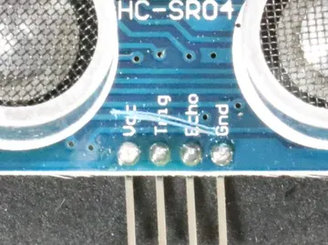
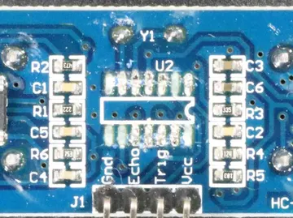
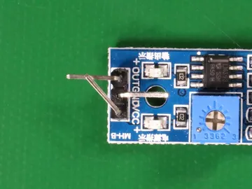
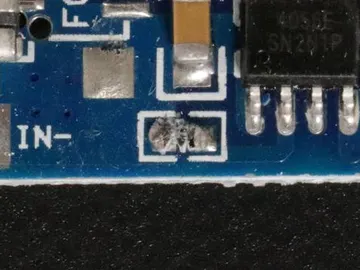

Sample Group/Sample Plant A/Build/AI Studio: CONVERT-ai & COMPOSE-ai
AI Studio: CONVERT-ai & COMPOSE-ai
SAMPLE DATACONVERT-ai · paper form → workflow
TORQUE CHECK SHEET (sample)
Part no: ________
Fastener A: ____ Nm
Fastener B: ____ Nm
Fastener C: ____ Nm
Clip seated? Y / N
Operator: ________
Part no.
Barcode
Fastener A–C
Number · Nm · limits to confirm
Clip seated?
Toggle
Operator
Signature
Upload PDFs, spreadsheets or text files; AI builds fully editable workflows you review before publishing.
Review & edit Upload more forms
COMPOSE-ai · describe it in plain language
“Create a start-of-shift layered process audit for the seat-frame weld cell: 8 yes/no checks, photo if any ‘no’, supervisor sign-off, and alert the quality manager if more than 2 checks fail.”
Generated template preview · v1
Checks 1–8
Toggle × 8 · photo required on “No”
Supervisor sign-off
Signature
Action
If “No” count > 2 → notify Quality Manager
Feedback: “Make check 3 a photo instead.” → v2
Confirm in final preview Version history (v1, v2)
AI vision · defect review queue Real images Real annotations

scratch

missing

bent

damage
Images and labels: VisA dataset (Zou et al., ECCV 2022, Amazon) · CC BY 4.0 · cropped. Each red box is the bounding box of the defect's ground-truth pixel mask, as published in the dataset. These are annotations, not model predictions. No vision model was run for this concept, so no detection accuracy is claimed. In a product, a model's proposed box would sit next to the reviewer's accept/reject decision.
Accept as defect Reject Send to CAPA
Feature names from DataMyte's public pages: Digital Clipboard AI. Layout, data and anything marked “Imagined UI” are a concept by chrismai.ai. Figures marked “Estimate” are model-inferred; figures marked “Real dataset” come from cited public data. See Methods · Photo and data credits.